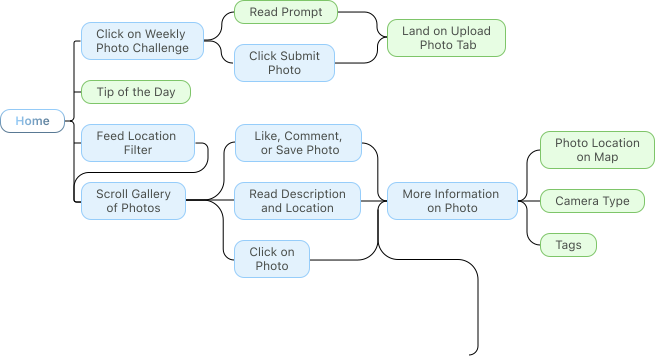
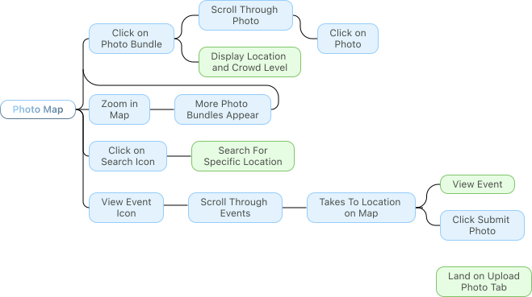

01. Problem Statement
What exactly was our prompt?
For photographers, finding the perfect location can be just as important as gathering the equipment. Yet, discovering unique, hidden, or niche photography spots can be time-consuming and difficult.
For that reason, we asked…
How might we design an app that can make discovering unique photo spots and sharing hidden gems effortless for photographers?
02. Research
Competitive Analysis
Where are photographers already looking?
Our research began by first conducting a competitive analysis. Each member was tasked to look at one of four photo-sharing platforms which include VSCO, Flicker, Pinterest, and Instagram to better understand their pros and cons.
Pros & Cons
Image-driven app curated for each user
Low-user generated originality
Flicker
High Quality photo sharing
Limited playfulness
VSCO
Aesthetically pleasing content that's curated
Weak social interaction
Most popular method of sharing photos
High pressure to perform
My competitive analysis on Pinterest (FigJam)


Competitive Analysis Results
So… what does each platform have to offer?
Every successful product has one standout feature. With so many photo apps, ours needed one too, but what would set us apart? That question carried us from research into ideation.
User Surveys
What do users actually prefer?
To understand how people discover photo spots, we surveyed 50+ individuals aged 18–25 about their inspiration sources, equipment, and sharing habits. You can check out our survey by clicking here!
- Spontaneous67%
- Planned20%
- Other13%
User Survey Results
Key Insights for the future!
67% discover photo spots spontaneously, and only 20% plan ahead. 73% explore in person rather than through social media. Key insight: spontaneous, real-world discovery feels more exciting than searching online.
User Interviews / Results
Three themes were consistent
To better understand common preferences and specific pain points in modern photo apps, we interviewed 10 UC Davis students (1 professional). Using an affinity map, we synthesized the findings and discovered three key problem areas that would guide us later in ideation.
Gatekeeping
Many keep favorite spots secret, fearing they'll lose their uniqueness.
Spontaneity
Best photos happen in the moment, without overthinking.
Casual Sharing
Sharing should feel casual, without pressure to be perfect.
03. Synthesis & Ideation
Mobile vs. Desktop
Why mobile won
The first big call was mobile or desktop. Research showed people prefer spontaneous, in-person discovery, which is exactly where mobile shines. Desktop is better for big screens and editing, but mobile lets photographers explore, shoot, and share in the moment.

Mobile
- Push notifications
- Works offline
- Built for spontaneity
- Best for casual users
Desktop
- Can’t shoot on the go
- Suits polished, pro uploads
- More ways to monetize
Looking back at our research
Laying out the journey
To turn our research into actionable designs, I went back through the main pain points from users. From there I began brainstorming solutions, mapping the overall workflow and experience through information architectures and user flows.
Information Architecture


User Flow



